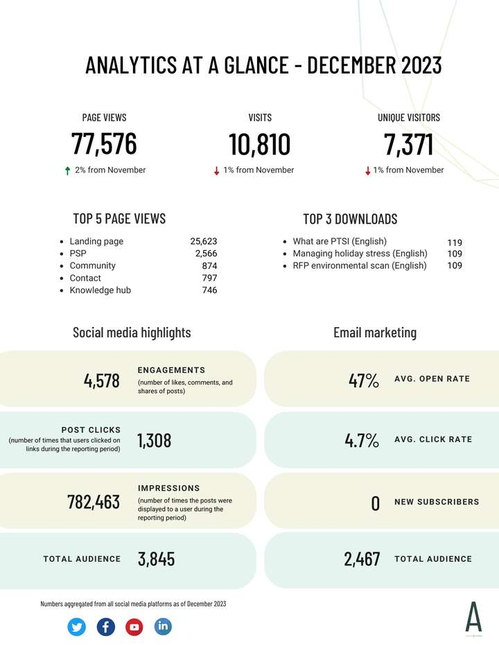

Content operations, brand consistency and measurement for multi-channel teams
I run multi-channel content programs from brief to report. I coordinate agencies and internal teams and keep every piece on brand. Then I measure what works. My audiences are bilingual and span Canada and Southeast Asia.
Content ManagerContent OperationsEN · VIHo Chi Minh City, Vietnam
This portfolio shows work from the Atlas Institute for Veterans and Families, a national centre funded by Veterans Affairs Canada. From 2021 to 2024, I was Communications Lead for two of its portfolios, Lived Experience and Stakeholder Engagement. Together they carried much of the Institute’s public voice. Lived Experience content shared the stories of Veterans and their families, so tone and consent shaped every piece. Stakeholder Engagement spoke for the Institute to federal partners, so each message had to sound like one organization, from presentations to the stakeholder newsletter. Across both portfolios, I ran a six-channel editorial calendar and managed agencies and partners, and I reported results to leadership every month. The audience was national, and the subject was military and Veteran mental health, so every piece had to be accurate and handled with care.
Career highlights
I started in bilingual editorial at Indochine Media Ventures, writing for Robb Report Vietnam and Barcode Vietnam after my B.A. in Communications at RMIT Vietnam. In Canada, I earned a journalism diploma with high distinction at SAIT, then worked in communications at CMHA Calgary and in marketing at Anderson Vacations. I spent three years as Social & Digital Engagement Lead at the Atlas Institute, and I now work with them as Communications Lead Contractor.
Approach
How I run content
One workflow for many hands
Agencies and internal teams all work from one brief standard. Every piece then moves through the same review steps before it goes live.
One brand voice
Researchers, designers and agencies write to one agreed voice. Each piece gets a final check against the style guide.
Metrics decide the next move
I set the measure before production starts. Monthly reports and A/B tests on headlines and hooks then show what to keep.
+48%
Social engagement, Atlas Institute 2021–2024
+27%
Website traffic, Atlas Institute 2021–2024
6
Channels in one editorial calendar
442
Summit registrants, 2023
Case studies
Multi-channel production and reporting
Four projects, each laid out with the same row labels, from Challenge to Outcome. A case shows only the rows it has evidence for.
Communications lead for content · 2023 and 2024
Veteran Family Virtual Summit: one campaign across six formats
Challenge
A national virtual summit for Veteran Families needed registrations before the event and follow-up after it. Content ran across six formats. Social posts and web pages carried the core message along with email. Reels and paid ads extended reach, and video carried the live event. The summit ran two years in a row.
Team & workflow
Brief
Content plan & calendar
Production with agencies
Manager review
Communications Director approval
Launch, paid ads & press release
Post-event report
I led content across the full pipeline. Internally, I worked with the Lived Experience team and the Project Coordinator. Externally, I coordinated an event agency and an art agency, plus a web developer. For media, I sent the press release to editorial publications across Canada through Cision.
Every asset needed two approvals: my manager first, then the Communications Director.
4 monthsBrief to launch
5Internal teams and external partners
2 stepsApproval: manager, then Communications Director
4 videosTeaser, official, day-of and closing
Each format paired copy with graphics. The four videos played on the platform where attendees watched the summit live.
Brand voice
Warm and practical, written for family members first. The summary report’s opening set the tone: Veteran Families have needs that often go unheard.
Measurement
442Registrants across Canada and internationally
11Provinces and territories represented
92%Said it improved their understanding
96%Want to learn more
Results from the 2023 summit. Paid ads on Meta supported registrations. Organic social posts and email drove the rest, along with media coverage.
Outcome
In 2023, the event agency rewrote copy beyond its brief, and the brand voice drifted. For 2024, I built a detailed workflow in Smartsheet that tracked every change and who made it. Each partner then worked within a clear role, and every edit had an owner.
Analytics at a glance: one page that turns numbers into decisions
Challenge
Leadership needed the month’s web, social and email results on one page they could read in a few minutes.
Team & workflow
I pulled the data from Google Analytics and Meta Business Suite, along with Sprout Social and the email platform. I built the report and sent it to leadership and the team every month.
Design

December 2023 issue, from the internal communication portal.
Headline numbers come first. Website totals sit at the top in large type, so a reader gets the month’s picture in a few seconds.
Every number has a comparison. Each total shows its change from the previous month with a green or red arrow, so leadership sees the direction at a glance.
Top pages show what audiences use. The top five pages and top three downloads show which resources people came for.
Plain-language definitions. Terms like impressions and engagements carry a short definition, so readers from any department can follow every figure.
Each channel has its own zone. Website data fills the top half. Social media and email sit side by side below it.
The same template every month. An identical layout lets leadership compare any two months side by side.
Outcome
The top pages and top downloads pointed the team toward topics that drew readers. Recipients often emailed back after an issue to say the numbers were extremely helpful.
Analytics ReportingData StorytellingReport DesignWeb AnalyticsSocial Media MetricsEmail MetricsLeadership Reporting
Brand governance and agency management · 2023
Brand governance: the rules that keep many teams on brand
Challenge
Many staff and outside partners published content for Atlas. The organization needed shared rules for conduct and copyright, plus a plan for handling a PR crisis.
Team & workflow
I wrote and owned the social media policy, including a PR crisis response matrix, and I led Canva use across the organization. I contributed to the Style Guide (v3, June 2023) and produced the Digital Strategy Report (April–June 2023).
I briefed and managed two creative agencies, Stiff (Ottawa) and Anatomii (Vancouver). I gave them creative input and feedback, and I reviewed their work for quality and timeline against the Style Guide.
Outcome
I shared the policy and guides across the organization through internal tools, so every team worked from the same living documents.
Brand GovernanceSocial Media PolicyCrisis CommunicationsStyle GuideAgency ManagementDigital Strategy
Quarterly stakeholder newsletter · 2021–2022
Changemakers: one voice across many contributors
Changemakers, Issue 1, September 2021 (Atlas Institute)
Challenge
Each issue carried 8–12 sections from 8 contributors in research and program teams, and each contributor wrote in their own style.
Team & workflow
Editorial calendar
Source stories
Edit to one voice
Design with other teams
Bilingual publication
3Issues as editorial lead
8–12Sections per issue
8Contributors per issue
7 weeksProduction cycle per issue
Brand voice
Plain and warm, with evidence behind every claim. I wrote for a Veteran Family member first and a researcher second.
Measurement
Readership reached 87%.
Outcome
One consistent voice let 8 different contributors sound like one organization. Next time, I would add click-through by section to see which stories lead readers to act.
Five published pieces that show how I adapt one message to each channel and audience.
Video · 2025–2026
Atlas Institute Impact Report 2025–26 video
I produced the video for the 2025–26 Impact Report as part of my contractor work. It turns a year of research findings and program outcomes into a short piece for a national Veteran and stakeholder audience.
Video ProductionImpact ReportingStakeholder Communications
I wrote all English content from a single brief, from the web copy and social posts to the email and video script. The dandelion, the recognized symbol of military children, carried through every format, so the campaign read as one story.
"We are excited to announce the launch of a video campaign honouring the RCMP's 150 years of dedicated service to keeping our country safe. To foster community empathy and raise awareness about the diverse experiences of RCMP Veterans and their Families, this series features short documentary profiles of current and former RCMP members sharing what it means to serve."
Campaign launch section, RCMP 150 web hub, April 2023
I wrote a multi-section web hub to launch a documentary video series. Clear navigation and calls to action in each section guided visitors to the videos.
Lived Expertise Lead recruitment, adapted for each platform
One recruitment announcement, written three ways. LinkedIn led with credentials, and Facebook led with community. The Twitter/X version stayed short and action-focused.
LinkedInFacebookTwitter / X
AI
Atlas Institute for Veterans and Families
LinkedIn version
Are you a women-identifying Canadian Armed Forces or RCMP Veteran passionate about making a difference in the Veteran community? We have an exciting opportunity for you to utilize your lived expertise and contribute to meaningful projects at the Atlas Institute.
As the Lived Expertise Lead for Veterans, you will work closely with our research team to bring your firsthand knowledge to the forefront, conduct outreach with Veterans' organizations, and advocate for policies that address the unique needs of women Veterans and their Families.
Social CopyPlatform AdaptationRecruitment Communications
Media release · September 2023
Press release: visit of Ukraine’s First Lady
When Ukraine’s First Lady, Olena Zelenska, visited the Atlas Institute to discuss military mental health, I drafted the release announcing the visit and the memorandum of understanding that followed. The Minister of Veterans Affairs attended, and the release had to work for media and the public alike.
"Together, we are looking to explore opportunities to collaborate that will allow Lisova Polyana to support Veteran and Family mental health in Ukraine, informed by the work Atlas is doing."
Fardous Hosseiny, President & CEO, Atlas Institute, quoted in the release, September 2023
Media RelationsGovernment & Stakeholder CommunicationsEditorial Coordination